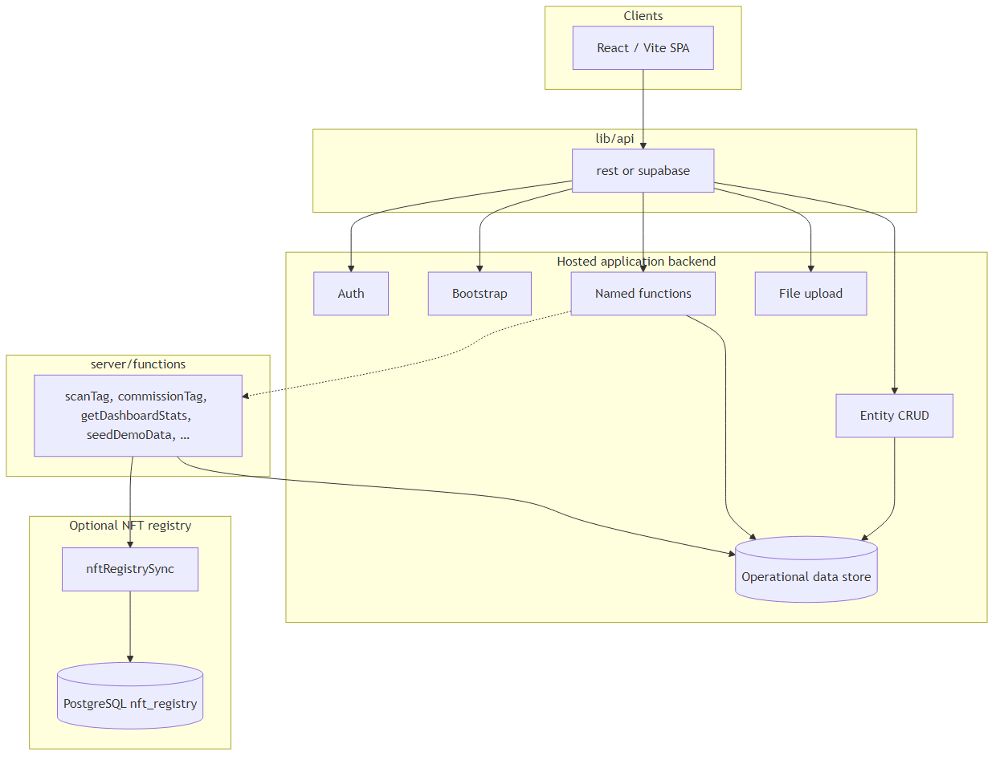
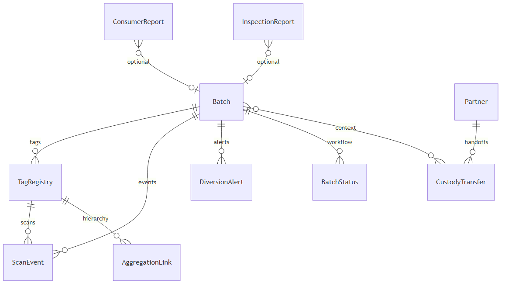
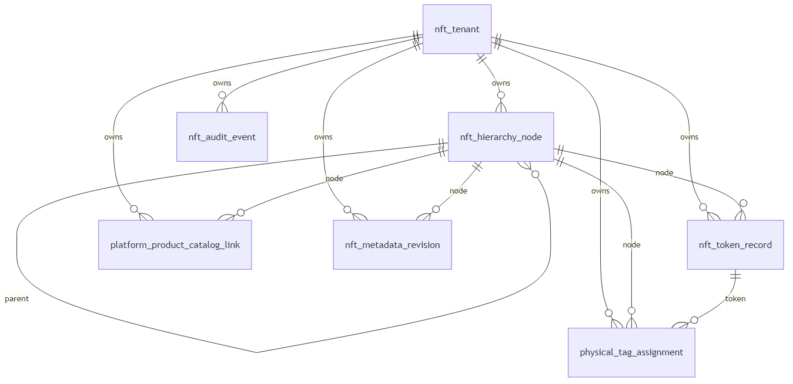
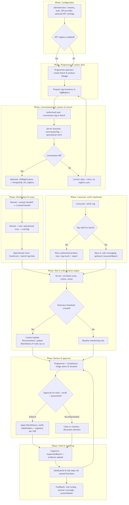

This document combines the architecture narrative, technical diagrams, and end-to-end business flow for stakeholders, implementation partners, and security reviewers. Generated from repository sources in docs/.
Diagram sources: docs/diagrams/*.mmd · Narrative source: docs/ARCHITECTURE_NARRATIVE.md
TraceGuard supports authenticate → trace → enforce for regulated physical goods: serialised NFC tags, scan events across the supply chain, diversion intelligence, inspector workflows, and optional linkage to an NFT-oriented tag registry in PostgreSQL. The repository ships a single-page web application and reference server logic; your hosted backend owns authentication, persistence, and API routing unless you adopt Supabase end-to-end.
The first diagram (docs/diagrams/01-architecture.mmd) shows a deliberate split between what runs in the browser, how the app talks to infrastructure, and where state actually lives.

The UI is a modern React application built with Vite. It loads only public configuration and user-visible data through controlled APIs. It does not embed database drivers or service-role secrets; that boundary keeps the attack surface small and aligns with typical compliance expectations for front-end code.
lib/apiAll backend access is funnelled through lib/api, which switches on VITE_API_PROVIDER:
fetch against your API origin, sending a bearer token from storage for authenticated calls. This supports custom gateways, existing enterprise APIs, or a thin BFF you operate yourself.That dual-provider pattern is a portability choice: the product narrative (traceability, enforcement, inspector tools) stays stable while you swap the concrete host (custom REST vs managed Postgres + functions). Details of paths and payloads are specified in BACKEND_API.md.
Regardless of provider, the logical backend exposes:
me-style profile (including optional role for admin-only flows).lib/api/entityTableMap.js when using the REST table contract.scanTag, commissionTag, getDashboardStats, inspectorAI, and others). These encapsulate joins, aggregations, AI tool use, and elevated read patterns where row-level security would otherwise return empty lists to the browser.Underneath these APIs sits the operational data store: the database or tables that hold batches, tags, scans, alerts, partners, and the rest of the domain. That store is authoritative for live operations—especially scan throughput and enforcement state.
The server/functions/ tree holds TypeScript handlers that embody business rules: scanning logic, commissioning, dashboard statistics, demo seeding, optional AI assistants, and NFT registry synchronisation. In deployment, these may run as Supabase Edge Functions, a Node service, or workers behind your API gateway—the diagram shows them writing to the same operational store the UI ultimately observes.
The dashed line from named functions to server/functions indicates that your REST or Edge deployment wires those routes to this logic (or a reimplementation). The repository treats this code as the authoritative reference for behaviour, not as an opaque black box.
Operational NFC and event data remain in the main entity store. A separate PostgreSQL schema (nft_registry, defined in database/nft-registry/postgres/001_schema.sql) holds taxonomy, hierarchy, token lifecycle, metadata revisions, and physical-tag inventory suitable for enterprise structure and optional on-chain alignment.
Synchronisation (nftRegistrySync and related call sites) runs after successful operational writes where configured (for example commissioning). That order makes the ops store canonical for “what happened in the field”, while the NFT database can be authoritative for catalogue structure, mint state, and compliance-oriented metadata history without contending with high-volume scan ingestion. Environment variables for the registry connection are server-side only; see DATABASE.md.
The second diagram (docs/diagrams/02-operational-domain.mmd) is a conceptual entity-relationship view of the domain described in DATABASE.md. Your hosted backend must implement storage that satisfies these relationships; exact column names and foreign keys are part of your schema design.

Some dashboards and maps load aggregated data through server functions using a service role (or equivalent) so that entity-level read rules in the browser do not silently empty charts for legitimate signed-in users. That pattern is documented alongside getRiskMapData and listConsumerReports in DATABASE.md.
The third diagram (docs/diagrams/03-nft-registry.mmd) matches the PostgreSQL schema: a tenant-scoped tree of hierarchy nodes, optional on-chain token records, physical tag assignments keyed by tag_uid, product-to-node catalog links, versioned metadata revisions (for “what the consumer saw at time T”), and an append-style audit trail.

Bridge fields tie this world to operations: physical_tag_assignment.tag_uid aligns with TagRegistry.tag_uid; platform product identifiers align with your SKU or product keys in the ops layer. Integration can be event-driven (commission → sync message) or batch reconciliation; strict failure modes are governed by NFT_REGISTRY_SYNC_STRICT as described in DATABASE.md.
The following diagram summarises the business process from configuration and master data through commissioning, supply-chain scans, consumer verification, risk signals, compliance review, inspections, and reporting. It complements the technical architecture above for product, operations, and executive audiences.

rest vs supabase lets you align procurement and existing infrastructure without rewriting the product UI.Together, the diagrams and this narrative describe one coherent architecture: a traceability front end, a pluggable API surface, an operational system of record, optional reference server logic, and an optional PostgreSQL NFT catalogue linked by clear bridge fields and sync hooks.